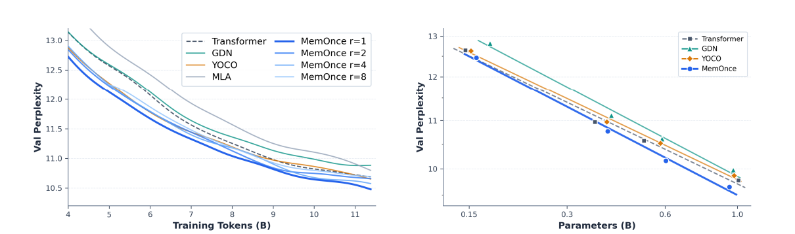

Scalable Architecture
Caches and retrieves memory only once, simultaneously achieving accurate recall, linear-time complexity, and a constant GPU memory budget.
A Scalable Memory Architecture for Large Language Models
An L-stage hybrid backbone interleaves three linear blocks (e.g., GDN) with one Memory Sparse Attention block.
Retains only a small trailing subset of final-layer hidden states in a single global memory bank, eliminating multi-layer token caches.
Selects the most relevant memory states only once for each continual input and reuses them across all attention layers and decoding steps.
Dynamically projects the retrieved memory states into layer-specific KV caches on demand while keeping the backbone frozen.
Caches and retrieves memory only once, simultaneously achieving accurate recall, linear-time complexity, and a constant GPU memory budget.
Consistently outperforms Transformer, linear GDN, and YOCO across model sizes via 64× depth–time cache compression.
The first native memory model to surpass full-context baselines up to 1M tokens, beating M+ and Metis without catastrophic forgetting.
At 1M context, slashes active GPU cache by 1,313× (25 MB), accelerates prefill by 6.9×, and boosts throughput by 3.5×.
Rigorous verification across pre-trained foundation models and native long-context memory adaptation.
Evaluating language modeling perplexity (PPL ↓) and zero-shot reasoning accuracy (Avg. ↑) across eight benchmarks at ~400M scale.

Training & Scaling Dynamics: Validation perplexity vs. training tokens (r = 1, 2, 4, 8) and model scales (0.15B to 1.0B).
| Model Architecture | Params | Val PPL ↓ | WikiText ↓ | LAMB. ↓ | PIQA ↑ | ARC-e ↑ | SciQ ↑ | BoolQ ↑ | Avg. (8 Tasks) ↑ |
|---|---|---|---|---|---|---|---|---|---|
| Transformer (Vaswani et al., 2017) | 365M | 10.97 | 20.90 | 33.24 | 65.7 | 52.4 | 83.2 | 58.2 | 51.85 |
| Sliding Window Attn (SWA) | 365M | 11.00 | 20.52 | 32.69 | 65.6 | 50.1 | 83.2 | 59.7 | 51.60 |
| Gated DeltaNet (GDN) (Yang et al., 2025) | 410M | 11.11 | 26.03 | 33.37 | 67.6 | 54.1 | 84.2 | 60.6 | 52.31 |
| YOCO (Sun et al., 2024b) | 387M | 10.97 | 24.38 | 35.18 | 67.4 | 51.6 | 82.6 | 59.7 | 51.97 |
| MemOnce (r = 8, Ours) | 400M | 10.89 | 21.08 | 32.45 | 67.8 | 52.3 | 81.7 | 61.6 | 52.35 |
| MemOnce (r = 1, Ours) | 400M | 10.77 | 19.28 | 32.69 | 67.6 | 52.4 | 84.7 | 61.9 | 52.63 |
Evaluating response accuracy (%) across 5 memory benchmarks. MemOnce is the first native memory model to surpass full-context baselines.
| Model | Scale | MemBench (~4K) | LoCoMo (~21K) | LongMemEval (~115K) | PersonaMem (~128K) | PersonaMem (~1M) | Overall Avg. ↑ |
|---|---|---|---|---|---|---|---|
| Qwen3.5-2B (Full Context Baseline) | 2B | 72.69 | 64.35 | 41.00 | 45.00 | 23.60 | 49.33 |
| Qwen3.5-4B (Full Context Baseline) | 4B | 82.64 | 69.55 | 42.20 | 43.50 | 33.60 | 54.30 |
| δ-Mem (Lei et al., 2026) | 4B | 46.72 | 16.88 | 11.20 | 40.00 | 31.60 | 29.28 |
| Metis (Zhang et al., 2026) | 4B | 47.45 | 9.35 | 7.40 | 37.60 | 37.20 | 27.80 |
| EvoEmbedding (Nie et al., 2026a) | 4B | 67.08 | 25.97 | 16.40 | 47.30 | 39.00 | 39.15 |
| M+ (Wang et al., 2025a) | 8B | 66.93 | 46.43 | 27.40 | 38.40 | 27.80 | 41.39 |
| MemOnce-2B (Ours) | 2B | 73.54 | 59.03 | 35.40 | 48.50 | 39.40 | 51.17 +1.84 |
| MemOnce-4B (Ours) | 4B | 84.34 | 67.01 | 47.40 | 53.60 | 48.00 | 60.07 +5.77 |
MemOnce achieves 60.07% vs. 54.30% for full context on average across five benchmarks, outperforming M+ by +18.68% and Metis by +32.27% without catastrophic forgetting on general tasks.
Combining layer elimination and 8× temporal pooling (L × r = 64×) incurs less than 0.3% accuracy loss (52.63% → 52.35%), while consistently outperforming Transformer, GDN, and YOCO across 150M–1B scales.
MemOnce achieves linear prefilling time, constant active GPU memory, and near-invariant decoding throughput.

@article{nie2026memonce,
title = {MemOnce: A Scalable Memory Architecture for Large Language Models},
author = {Nie, Chang and Fu, Chaoyou and Liu, Songlin and Hu, Yiqing and Shan, Caifeng},
journal = {arXiv preprint},
year = {2026}
}